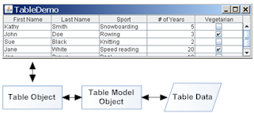

Lección: Usando Componentes Swing
Sección: Cómo Usar Varios Componentes
Cómo Usar Tablas
Con la clase
JTable puede
visualizar tablas de datos, permitiendo opcionalmente al usuario editar los datos. JTable no
contiene o cachea los datos; es simplemente una vista de sus datos. Aquí tiene una imagen de una tabla
típicamente mostrada dentro de un panel de desplazamiento:
El resto de esta sección le muestra como realizar algunas tareas comunes relacionadas con las tablas. Aquí están los tópicos que esta sección cubre:
- Crear una Tabla Simple
- Añadir una Tabla a un Contenedor
- Establecer y Cambiar Anchos de Columna
- Selecciones de Usuario
- Crear un Modelo de Tabla
- Monitorizar Cambios de Datos
- Disparar Eventos de Cambio de Datos
- Conceptos: Editores y Renderizadores
- Usar Renderizadores Personalizados
- Especificación de Tool Tips para Celdas
- Especificación de Tool Tips para los Encabezados de Columna
- Ordenar y Filtrar
- Usar un Combo Box como un Editor
- Usar Otros Editores
- Usar un Editor para Validar el Texto Introducido-por-el-Usuario
- Imprimir
- Ejemplos que Usan Tablas
Crear una Tabla Simple
Pruebe esto:
-
Pulse el botón Lanzar para ejecutar
SimpleTableDemousando Java™ Web Start ( descargue KDJ 7 o posterior). O, para compilar y ejecutar el ejemplo usted mismo, consulte el índice de ejemplos.
-
Pulse en la celda que contiene "Snowboarding".
La fila primera enterea se selecciona, indicando que ha seleccionado los datos de Kathy Smith. Una selección especial indica que la celda "Snowboarding" es editable. Generalmente, empieza a editar una celda de texto haciendo doble clic sobre ella. -
Posicione el cursor sobre el "Primer Nombre". Ahora presione el botón del ratón y arrastre a la derecha.
Como puede ver, los usuarios pueden reorganizar las columnas dentro de las tablas. -
Posicione el cursor justo a la derecha de un encabezado de columna. Ahora presione el botón del ratón y arrástrelo a la derecha o a la izquierda.
La columna cambia el tamaño, y las otras columnas se ajustan para rellenar el espacio remanente. -
Redimensione la ventana que contiene la tabla de forma que sea más grande de lo necesario para
visualizar la tabla entera.
Todas las celdas de la tabla se hacen más anchas. expándiendose para rellenar el espacio horizontal extra.
La tabla en
SimpleTableDemo.java declara los nombres de columna en una matriz de
Strings:
String[] nombresColumna = {"Primer Nombre",
"Apellidos",
"Deporte",
"# de Años",
"Vegetariano"};
Sus datos son inicializados y almacenados en una matriz de Objects bidimensional:
Object[][] datos = {
{"Kathy", "Smith",
"Snowboarding", new Integer(5), new Boolean(false)},
{"John", "Doe",
"Remo", new Integer(3), new Boolean(true)},
{"Sue", "Black",
"Tejer", new Integer(2), new Boolean(false)},
{"Jane", "White",
"Lectura veloz", new Integer(20), new Boolean(true)},
{"Joe", "Brown",
"Piscina", new Integer(10), new Boolean(false)}
};
Después la Tabla se construye usando estos datos y nombresColumna:
JTable table = new JTable(datos, nombresColumna);
Hay dos constructores de JTable que directamente aceptan datos (SimpleTableDemo usa
el primero):
JTable(Object[][] rowData, Object[] columnNames)JTable(Vector rowData, Vector columnNames)
La ventaja de estos constructores es que son fáciles de usar. Sin embargo, estos constructores también tienen desventajas:
- Automáticamente hacen cada celda editable.
-
Tratan todos los tipos de datos igual (como cadenas). Por ejemplo, si una columna de la tabla tiene datos
Boolean, la tabla puede visualizar los datos en una casilla de verificación. Sin embargo, si usa uno de los dos constructores deJTablelistados anteriormente, sus datosBooleanson mostrados como una cadena. Puede ver esta diferencia en la columnaVegetarianode la figura previa. - Requieren que coloque todos los datos de la tabla en una matriz o vector, los cuales pueden no ser apropiados para algunos datos. Por ejemplo, si está instanciando un conjunto de objetos desde una base de datos, querría consultar los objetos directamente por sus valores, en vez de copiar todos sus valores en una matriz o vector.
Si quiere saltarse estas restricciones, necesita implementar su propio modelo de tabla, como se describe en Crear un Modelo de Tabla.
Añadir una Tabla a un Contenedor
Aquí está el código habitual para crear un panel de desplazamiento que sierve como un contenedor para una tabla:
JScrollPane scrollPane = new JScrollPane(table);
table.setFillsViewportHeight(true);
Las dos líneas en este retazo hace lo siguiente:
-
El constructor
JScrollPanees invocado con un argumento que se refiere al objeto de la tabla. Esto crea un panel de desplazamiento como un contenedor para la tabla; la tabla es automáticamente añadida al contenedor. -
JTable.setFillsViewportHeightes invocado para establecer la propiedadfillsViewportHeight. Cuando esta propiedad estruela tabla usa la altura entera del contenedor, incluso si la tabla no tiene bastantes filas para usar le espacio vertical completamente. Esto hace más facil usar la tabla como un objetivo de arrastrar y soltar.
El panel de desplazamiento automáticamente coloca la cabecera de tabla en la parte superior de la ventana. Los nombres de columna permanecen visibles en la parte superior del área de visión cuando los datos de la tabla son desplazados.
Si está usando una tabla sin un panel de desplazamiento, entonces debe obtener el compenente de cabecera de la tabla y colocarlo usted mismo. Por ejemplo:
container.setLayout(new BorderLayout());
container.add(table.getTableHeader(), BorderLayout.PAGE_START);
container.add(table, BorderLayout.CENTER);
Establecer y Cambiar Anchos de Columna
Por defecto, todas las columnas en una tabla comienzan con el mismo ancho, y las columnas automáticamente llenan el ancho entero de la tabla. Cuando la tabla se vuelve más ancha o más estrella (lo cual podría ocurrir cuando el usuario redimensiona la ventana que contiene la tabla), todas los anchos de columna cambian apropiadamente.
Cuando el usuario redimensiona una columna arrastrando el borde derecho, entonces o las otras columnas deben cambiar el tamaño, o el tamaño de la tabla debe cambiar. Por defecto, el tamaño de la tabla permanece igual, y todas las columnas a la derecha del punto de arrastre se redimensionan para acomodarse el espacio añadido o eliminado desde la columna a la izquierda del punto de arrastre.
Para personalizar el ancho inicial de las columnas, puede invocar setPreferredWidth en cada una de
las columnas de su tabla. Esto fija tanto los anchos preferidos de las columnas y sus anchos relativos
aproximados. Por ejemplo, añadiendo el siguiente código a SimpleTableDemo hace que
su tercera columna sea más grande que las otras columnas:
TableColumn column = null;
for (int i = 0; i < 5; i++) {
column = table.getColumnModel().getColumn(i);
if (i == 2) {
column.setPreferredWidth(100); //la tercera columna es más grande
} else {
column.setPreferredWidth(50);
}
}
Como el código precedente muestra, cada columna en una tabla es representada por un objeto
TableColumn. TableColumn suministra métodos para establecer y obtener los
anchos mínimos, preferidos, y máximos de una columna, como tambien un método para obtener el ancho actual.
Para ver un ejemplo de configuración de anchos de celda basados en una aproximación del espacio necesario
para dibujar los contenidos de las celdas, consulte el método initColumnSizes en
TableRenderDemo.java.
Cuando el usuario explícitamente redimensiona las columnas, los anchos preferidos de las columnas son establecidos de tal forma que los tamaños especificados por el usuario se vuelven los nuevos anchos actuales de las columnas. Sin embargo, cuando la tabla misma es redimensionada ─ habitualmente porque la ventana se ha redimensionado ─; los anchos preferidos de las columnas no cambian. En vez de eso, los anchos preferidos existentes son usados para calcular nuevos anchos de columna para rellenar el espacio disponible.
Puede cambiar el comportamiento de redimensionamiento de una tabla invocando
setAutoResizeMode.
Selecciones de Usuario
En su configuración por defecto, una tabla soporta una selección que consiste de una o más filas. el usuario uede seleccionar un rango contiguo de filas o un conjunto arbitrario de filas. La última celda que el usaurio indicó obtiene una indicación especial; en la apariencia Metal, la celda es perfilada. Esta celda es conocida como selección de plomo; a veces es llamada "la celda con el foco" o "la celda actual".
El usuario puede usar el ratón y/o teclado para hacer selecciones, como se describen en la siguiente tabla:
| Operación | Acción de Ratón | Acción de Teclado |
|---|---|---|
| Seleccionar una única fila. | Pulsar. | Flecha Arriba o Flecha Abajo. |
| Extiende la selección contigua. | Mayúsculas-Clic o Arrastrar sobre las filas. | Flecha Mayúsculas-Arriba o Flecha Mayúsculas-Abajo. |
| Agrega una fila a una selección de filas. | Control-Clic | Mueve la selección de plomo con la Flecha Control-Arriba o la Flecha Control-Abajo, entonces usa la barra espaciadora para añadir a la selección o Control-Barra Espacidora para alterner la selección. |
Para ver como las selecciones funcionan, pulse el botón Lanzar para ejecutar TableSelectionDemo
usando Java™ Web
Start (descargue KDJ 7 o
posterior). O, para compilar y ejecutar el ejemplo por usted mismo, consulte
el indice de ejemlos.
Este ejemplo de programa presenta la tabla familiar, y permite al usuario manipular ciertas opciones de JTable. Hay también un panel de texto que graba los eventos de selección.
En la captura de abajo, un usuario ha ejecutado el programa, pulsado en la primera fila, entonces ha hecho control-click en la fila tercera. Note el rotulado alrededor de la última celda pulsada; así es como el aspecto Metal destaca la selección de plomo.
Bajo el "Modo de Selección" hay un conjunto de botones radio. Pulse el titulado "Selección Única". Ahora puede seleccionar sólo una fila a la vez. Si pulsa el botón de radio "Selección Única de Intervalo", puede seleccionar un conjunto de filas que debe ser contigua.
Todos los botones de radio bajo "Modo de Selección" invocan
JTable.setSelectionMode. Este método toma un argumento simple, el cual debe ser una de las
siguientes constantes definidas en javax.swing.ListSelectionModel:
MULTIPLE_INTERVAL_SELECTION, SINGLE_INTERVAL_SELECTION, y
SINGLE_SELECTION.
Volviendo a TableSelectionDemo, note las tres casillas de verificación bajo "Opciones
de Selección". Cada una de las casillas de verificación controla el estado de una variable
boolean
enlazada definida en JTable:
-
"Selección de Fila" controla
rowSelectionAllowedla cual tiene un método configuradorsetRowSelectionAllowedy un método obtenedorgetRowSelectionAllowed. Cuando esta propiedad enlazada estrue(y la propiedadcolumnSelectionAllowedesfalse), el usuario puede seleccionar por fila. -
Controles de "Selección de Columna" controlan
columnSelectionAllowedel cual tiene un método configuradorsetColumnSelectionAllowedy un método obtenedorgetColumnSelectionAllowed. Cuando esta propiedad enlazada estrue(y la propiedad enlazadarowSelectionAllowedesfalse), el usuario puede seleccionar por columna. -
"Selección de Celda" controla
cellSelectionEnabled, la cual tiene un configurador, el cual tiene un método configuradorsetCellSelectionEnabledy un método obtenedorgetCellSelectionEnabled. Cuando esta propiedad enlazada estrue, el usuario puede seleccionar una celda única o un bloque rectangular de celdas.
NOTA:
JTable usa un concepto muy simple de selección, gestionada como una intersección de filas y
columnas. No fue diseñada para manejar selecciones de celda totalmente independientes.
Si usted deshabilita las tres casillas de verificación (estableciendo las tres propiedades enlazadas a
false), no hay selección; solo se muestra la selección de plomo.
Puede notar que la casilla de verificación "Selección de Celda" está deshabilitada en el modo de selección de intervalos múltiples. Esto es porque la selección de celdas no está soportada en este modo en la demo. Puede especificar la selección por celda en el modo de selección de intervalo múltiple, pero el resultado es una tabla que no produce selecciones útiles.
Puede también notar que cambiar cualquiera de las tres opciones de selección puede afectar a las otras. Esto es
porque permitir tanto la selección de filas como de columnas es exactamente lo mismo que habilitar la selección
de celdas. JTable automáticamente actualiza las tres variables enlazadas según sea necesario para
mantenerlas consistentes.
NOTA: Establecer
cellSelectionEnabled a un valor tiene el efecto lateral de también establecer a
rowSelectionEnabled y columnSelectionEnabled a ese valor. Establecer
rowSelectionEnabled y columnSelectionEnabled a un valor tiene el efecto lateral de
de también establecer cellSelectionEnabled a ese valor. Establecer
rowSelectionEnabled y columnSelectionEnabled a diferentes valores tiene el efecto
lateral de también establecer cellSelectionEnabled a false.
Para recuperar la selección actual, use
JTable.getSelectedRows el cual devuelve una matriz de índices de fila, y
JTable.getSelectedColumns el cual devuelve una matriz de índices de columna. Para
recuperar las coordenadas de la selección de plomo, consulte los modelos de selección para la propia tabla
y para el modelo de columnas de la tabla. El código siguiente formatea una cadena conteniendo la fila y
columna de la selección de plomo:
String.format("Lead Selection: %d, %d. ",
table.getSelectionModel().getLeadSelectionIndex(),
table.getColumnModel().getSelectionModel().getLeadSelectionIndex());
Las selecciones de usuario generan un número de eventos. Para información sobre estos, consulte Cómo Escribir un List Selection Listener en la lección Escribiendo Listener Events.
NOTA: La selección de datos en realidad describe las celdas seleccionadas en la "vista" (los datos de la tabla tal como aparecen después de cualquier ordenamiento o filtrado) en lugar de en el modelo de la tabla. Esta distinción no importa a menos que sus datos vistos hayan sido reorganizados por ordenamiento, filtrado, o la manipulación de columnas por el usuario. En ese caso, debe convertir las coordenadas de selección usando los métodos de conversión descritos en Ordenar y Filtrar.
Crear un Modelo de Tabla
Cada objeto tabla usa un objeto de modelo de tabla para gestionar los datos reales de la tabla. Un
objeto de modelo de tabla tiene que implementar el interfaz
TableModel. Si el programador no ofrece un objeto de modelo de tabla, JTable
automáticamente crea una instancia de
DefaultTableModel. Esta relación es ilustrada abajo.

El constructor JTable usado por SimpleTableDemo crea su modelo de tabla con código
como este :
new AbstractTableModel() {
public String getColumnName(int col) {
return columnNames[col].toString();
}
public int getRowCount() { return rowData.length; }
public int getColumnCount() { return columnNames.length; }
public Object getValueAt(int row, int col) {
return rowData[row][col];
}
public boolean isCellEditable(int row, int col)
{ return true; }
public void setValueAt(Object value, int row, int col) {
rowData[row][col] = value;
fireTableCellUpdated(row, col);
}
}
Como el código precedente muestra, implementar un modelo de tabla puede ser simple. Generalmente, usted
implementa su modelo de tabla en una subclase de la clase
AbstractTableModel.
Su modelo podría contener sus datos en una matriz, vector, o podría obtener los datos desde una fuente externa como una base de datos. Podría incluso generar los datos en tiempo de ejecución.
Esta tabla es diferente de la tabla de SimpleTableDemo de las siguientes maneras:
-
El modelo de tabla personalizado de
TableDemo, a pesar de que es simple, puede fácilmente determinar el tipo de datos, ayudando aJTablea mostrar los datos en el mejor formato. El modelo de tabla creado automáticamente porSimpleTableDemo, por otra parte, no sabe que la columna nº de Años contiene números (los cuales generalmente deberían estar alineados a la derecha y tienen un formato particular). Tampoco sabe que la columnaVegetarianocontiene valores booleanos, los cuales pueden ser representados por casillas de verificación. -
El modelo de tabla personalizado implementado en
TableDemono le permite editar los nombres de las columnas; sin embargo, le permite editar las otras columnas. EnSimpleTableDemo, todas las celdas son editables.
Vea abajo el código tomado de
TableDemo.java que es diferente del de
SimpleTableDemo.java. La fuente en negrita indica el código que hace
el modelo de esta tabla sea diferente del modelo de tabla definido automáticamente para
SimpleTableDemo.
public TableDemo() {
...
JTable table = new JTable(new MyTableModel());
...
}
class MyTableModel extends AbstractTableModel {
private String[] columnNames = ...//igual que antes...
private Object[][] data = ...//igual que antes...
public int getColumnCount() {
return columnNames.length;
}
public int getRowCount() {
return data.length;
}
public String getColumnName(int col) {
return columnNames[col];
}
public Object getValueAt(int row, int col) {
return data[row][col];
}
public Class getColumnClass(int c) {
return getValueAt(0, c).getClass();
}
/*
* No se necesita implementar este método a menos que su table sea
* editable.
*/
public boolean isCellEditable(int row, int col) {
//Note que la dirección del dato/celda es constante,
//no importa dónde aparezca la celda en pantalla.
if (col < 2) {
return false;
} else {
return true;
}
}
/*
* No se necesita implementar este método a menos que los datos de su tabla
* puedan cambiar.
*/
public void setValueAt(Object value, int row, int col) {
data[row][col] = value;
fireTableCellUpdated(row, col);
}
...
}
Monitorizar Cambios de Datos
Un modelo de tabla puede tener un conjunto de oyentes (listeners) que son notificados siempre que los datos
de la tabla cambian. Los oyentes son instancias de
TableModelListener. En el siguiente código de ejemplo, SimpleTableDemo se
extiende para incluir dicho oyente. El nuevo código está en negrita.
import javax.swing.event.*;
import javax.swing.table.TableModel;
public class SimpleTableDemo ... implements TableModelListener {
...
public SimpleTableDemo() {
...
table.getModel().addTableModelListener(this);
...
}
public void tableChanged(TableModelEvent e) {
int row = e.getFirstRow();
int column = e.getColumn();
TableModel model = (TableModel)e.getSource();
String columnName = model.getColumnName(column);
Object data = model.getValueAt(row, column);
...// Haz algo con los datos...
}
...
}
Disparar Eventos de Cambio de Datos
Parar disparar eventos de cambios de datos el modelo de la tabla debe saber cómo construir un objeto
TableModelEvent. Esto puede ser un procedimiento complejo, pero está ya implementado en
DefaultTableModel. Puede o permitir a JTable usar su instancia por defecto de
DefaultTableModel, o crear su propia subclase personalizda de DefaultTableModel.
Si DefaultTableModel no es una clase base adecuada para su clase de modelo de tabla personalizada,
considere hacer una subclase de
AbstractTableModel. Esta clase implementa un marco de trabajo simple para construir
objetos TableModelEvent. Su clase personalizada simplemente necesita invocar uno de los
siguientes métodos AbstractTableModel cada vez que los datos de la tabla se cambian por una
fuente externa.
| Método | Cambio |
|---|---|
fireTableCellUpdated |
Actualización de la celda especificada. |
fireTableRowsUpdated |
Actualización de filas especificadas |
fireTableDataChanged |
Actualización de la tabla entera (sólo datos). |
fireTableRowsInserted |
Nuevas filas insertadas. |
fireTableRowsDeleted |
Filas existentes borradas |
fireTableStructureChanged |
Invalida la tabla entera, tanto los datos como la estructura. |
Conceptos: Editores y Renderizadores
Antes de pasar a las próximas tareas, necesita entender cómo las tablas dibujan sus celdas. Podría esperar que cada celda en una tabla fuese un componente. Sin embargo, por razones de rendimiento, las tablas de Swing están implementadas de forma diferente.
En vez de eso, un único renderizador de celdas se usa generalmente para dibujar todas las celdas que contienen el mismo tipo de dato. Puede pensar del renderizador como un sello de tinta configurable que la tabla usa para imprimir apropiadamente el dato formateado en cada celda. Cuando el usuario empieza a editar los datos de las celdas, un editor de celda toma el control de la celda, controlando el comportamiento de edición de la celda.
Por ejemplo, cada celda en la columna Nº de Años en TableDemo contiene datos
Number ─ específicamente, un objeto Integer. Por defecto, el
renderizador de celdas para una columna que contiene Number usa una única instancia
JLabel para dibujar los números apropiados, alineados a la derecha, en las celdas de la columna.
Si el usuario empieza a editar una de las celdas, el editor por defecto de la celda usa un
JTextField alineado a la derecha para controlar la edición de la celda.
Para elegir el renderizador que visualiza las celdas en una columna, una tabla primero determina si especificó
un renderizador para esa columna en particular. Si no lo hizo, entonces la tabla invoca el método
getColumnClass del modelo de la tabla, el cual obtiene el tipo de datos de las celdas de la
columna. A continuación, la tabla compara el tipo de datos de la columna con una lista de tipos de datos para
la cual los renderizadores de celda están registrados. Esta lista es inicializada por la tabla, pero puede
añadirle o cambiarla. Actualmente, las tablas colocan los tipos de datos siguientes en la lista:
-
Boolean─ renderizado con una casilla de verificación. -
Number─ renderizado con una etiqueta alineada-a-la-derecha. -
Double,Float─ igual que losNumber, pero la traducción objeto-a-texto es realizada por un instancia deNumberFormat(usando el formato numérico por defecto para la configuración regional del usuario actual). -
Date─ renderizado por una etiqueta, con la traducción objeto-a-texto realizada por una instancia deDateFormat( usando un estilo corto para la fecha y el tiempo). -
ImageIcon,Icon─ renderizado por una etiqueta centrada. -
Object─ renderizada por una etiqueta que muestra el valor de cadena del objeto.
Los editores de celda son elegidos usando un algoritmo similar.
Recuerde que si permite a una tabla crear su propio modelo, ésta usa Object como el tipo de cada
columna. Para especificar tipos de columna más precisos, el modelo de tabla debe defiir el método
getColumnClass apropiadamente, como se demuestra por
TableDemo.java.
Tenga en cuenta que aunque los renderizados determinan como se muestran cada celda o cabecera de columna y puede especificar su texto de tool tip, un renderizador no maneja eventos. Si necesita recoger los eventos que tienen lugar dentro de una tabla, la técnica que use varía según el tipo de evento que le interese:
| Situación | Cómo Obtener Eventos |
|---|---|
| Para detectar eventos de una celda que está siendo editada... | Use el editor de celda (o registre un oyente en el editor de celda). |
| Para detectar selecciones y deselecciones de fila/columna/celda... | Use un oyente de selección como se describe en Detectar Selecciones de Usuario. |
| Para detectar eventos de ratón en una cabecera de columna... |
Registre el tipo apropiadao de
oyente de ratón sobre el objeto
JTableHeader de la tabla. (Vea
TableSorter.java por un ejemplo.)
|
| Para detectar otros eventos... |
Registre el oyente apropiado sobre el objeto JTable.
|
Las siguientes secciones le cuentan como personalizar la visualización y la edición especificando renderizadores y editores. Puede especificar renderizadores de celda y editores ya sea por columna o por tipo de dato.
Usar Renderizadores Personalizados
Esta sección le cuenta cómo crear y especificar un renderizador de celda. Puede establecer un renderizador de
celda específico-al-tipo usando el método setDefaultRenderer de JTable. Para
especificar que las celdas en una columna particular debería usar un renderizador, use el método
setCellRenderer de TableColumn. Puede incluso especificar un renderizador
específico-de-celda creando una subclase de JTable.
Es fácil personalizar el texto o imagen renderizada por el renderizador por defecto,
DefaultTableCellRenderer. Simplemente cree una subclase e implemente el método
setValue de forma que invoque a setText o setIcon con la cadena
apropiada o imagen. Por ejemplo, así es como se implementa la fecha predeterminada del renderizador:
static class DateRenderer extends DefaultTableCellRenderer {
DateFormat formatter;
public DateRenderer() { super(); }
public void setValue(Object value) {
if (formatter==null) {
formatter = DateFormat.getDateInstance();
}
setText((value == null) ? "" : formatter.format(value));
}
}
Si extender DefaultTableCellRenderer es insuficiente, puede construir un renderizador usando otra
superclase. La forma más fácil es crear una subclase de un componente existente, haciendo que su subclase
implemente el interfaz
TableCellRenderer. TableCellRenderer requiere simplemente un método:
getTableCellRendererComponent. La implementación de este método debe configurar el componente
de representación para reflejar el estado transferido y luego devolver el componente.
En una captura de TableDialogEditDemo, el renderizador usado para las
celdas de Color Favorito es una subclase de JLabel llamado ColorRenderer. Aquí
hay extractos de
ColorRenderer.java que muestra cómo está implementado.
public class ColorRenderer extends JLabel
implements TableCellRenderer {
...
public ColorRenderer(boolean isBordered) {
this.isBordered = isBordered;
setOpaque(true); //DEBE hacer esto para que se muestre el fondo.
}
public Component getTableCellRendererComponent(
JTable table, Object color,
boolean isSelected, boolean hasFocus,
int row, int column) {
Color newColor = (Color)color;
setBackground(newColor);
if (isBordered) {
if (isSelected) {
...
//selectedBorder es un borde sólido en el color
//table.getSelectionBackground().
setBorder(selectedBorder);
} else {
...
//unselectedBorder es un borde sólido en el color
//table.getBackground().
setBorder(unselectedBorder);
}
}
setToolTipText(...); //Discutido en la siguiente sección
return this;
}
}
Aquí tiene el código de
TableDialogEditDemo.java que registre una instancia de
ColorRenderer como el renderizador por defecto para todos los datos de
Color:
table.setDefaultRenderer(Color.class, new ColorRenderer(true));
Para especificar un renderizador específico-de-celda, necesita definir una subclase de JTable
que sobreescriba el método getCellRenderer. Por ejemplo, el código siguiente hace que la primera
celda en la primera columna de la tabla usa un renderizador personalizado:
TableCellRenderer weirdRenderer = new WeirdRenderer();
table = new JTable(...) {
public TableCellRenderer getCellRenderer(int row, int column) {
if ((row == 0) && (column == 0)) {
return weirdRenderer;
}
// si no...
return super.getCellRenderer(row, column);
}
};
Especificación de Tool Tips para Celdas
Por defecto, el texto de la tool tip visualizada para una celda de tabla es determinadao por el
renderizador de celda. Sin embargo, algunas veces puede ser más simple espeicificar el texto de la etiqueta
emergente sobreescribiendo la implementación del método getToolTipText(MouseEvent) de
JTable. Esta sección le muestra cómo usar ambas técnicas.
Para añadir una tool tip a una celda usando su renderizador, primero necista obtener o crear el
renderizador de la celda. Entonces, después de asegurarse de que el componente renderizado es un
JComponent, invoque el método setToolTipText sobre él.
Un ejemplo de establecer etiquetas emergentes para las celdas está en TableRenderDemo. Pulse el
botón Lanzar para ejecutarla usando
Java™ Web Start (
descargue KDJ 7 o posterior).
O, para compilar y ejecutar el ejemplo usted mismo, consulte el
índice de ejemplos.
El código fuente está en
TableRenderDemo.java. Se añaden etiquetas emergentes a las celdas
de la columna Deporte con el siguiente código:
//Configura las etiquetas emergentes para las celdas de Deporte.
DefaultTableCellRenderer renderer =
new DefaultTableCellRenderer();
renderer.setToolTipText("Pulse para el cuadro combinado");
sportColumn.setCellRenderer(renderer);
Aunque el texto de una tool tip en el ejemplo previo es estático, puede también implementar etiquetas emergentes cuyo texto cambia dependeiendo del estado de la celda o programa. Aquí tiene un par de formas de hacer eso:
-
Agrege un poquito de código a la implementación del renderizador del método
getTableCellRendererComponent. -
Sobreescribe el método
getToolTipText(MouseEvent)deJTable.
Un ejemplo de agregar código a un renderizador de celda está en TableDialogEditDemo. Pulse el
botón Lanzar para ejecutarlo usando
Java™ Web Start (
descargue KDJ 7 o posterior). O, para compilar y ejecutar el ejemplo por sí mismo, consulte el
índice de ejemplos.
TableDialogEditDemo usa un renderizador para colores, implementados en
ColorRenderer.java, que establece el texto de la tool tip
usando el código en negrita en el siguiente trozo:
public class ColorRenderer extends JLabel
implements TableCellRenderer {
...
public Component getTableCellRendererComponent(
JTable table, Object color,
boolean isSelected, boolean hasFocus,
int row, int column) {
Color newColor = (Color)color;
...
setToolTipText("RGB value: " + newColor.getRed() + ", "
+ newColor.getGreen() + ", "
+ newColor.getBlue());
return this;
}
}
Aquí tiene un ejemplo de cómo se ve la tool tip:
Puede especificar el texto de una tool tip sobreescribiendo el método
getToolTipText(MouseEvent) de JTable. El programa TableToolTipsDemo le
muestra cómo. Pulse el botón Lanzar para ejecutarlo usando
Java™ Web Start
(descargue KDJ 7 o posterior).
O, para compilar y ejecutar el ejemplo usted mismo, consulte el
índice de ejemplos.
Las celdas con etiquetas emergentes están en las columnas Deporte y Vegetariano. Aquí tiene una imagen de su tool tip:
Aqui está el código de
TableToolTipsDemo.java que implementa etiquetas emergentes para las
celdas en las columnas Deporte y Vegetariano:
JTable table = new JTable(new MyTableModel()) {
//Implementa las etiquetas emergente de una celda de tabla.
public String getToolTipText(MouseEvent e) {
String tip = null;
java.awt.Point p = e.getPoint();
int rowIndex = rowAtPoint(p);
int colIndex = columnAtPoint(p);
int realColumnIndex = convertColumnIndexToModel(colIndex);
if (realColumnIndex == 2) { //Columna deporte
tip = "El deporte favorito de esta persona para "
+ "participar es: "
+ getValueAt(rowIndex, colIndex);
} else if (realColumnIndex == 4) { //Veggie column
TableModel model = getModel();
String firstName = (String)model.getValueAt(rowIndex,0);
String lastName = (String)model.getValueAt(rowIndex,1);
Boolean veggie = (Boolean)model.getValueAt(rowIndex,4);
if (Boolean.TRUE.equals(veggie)) {
tip = firstName + " " + lastName
+ " es un vegetariano";
} else {
tip = firstName + " " + lastName
+ " no es un vegetariano";
}
} else { //otra columna
//Puede omitir esta parte si usted sabe que no
//tiene ningun renderizador que suplemente sus propios
//etiquetas emergentes.
tip = super.getToolTipText(e);
}
return tip;
}
...
}
El código es bastante sencillo, excepto quizás para la llamada a convertColumnIndexToModel. Esa
llamada es necesaria porque si el usuario mueve las columnas, el índice de la vista para la columna no
coincidirá con el índice del modelo para la columna. Por ejemplo, el usuario podría arrastrar la columna
Vegetariano (que el modelo considera que está en el índice 4) por lo que se muestra como la primera
columna ─ en el índice de vista 0. Ya que prepareRenderer ofrece el índice de la
vista, necesita trasladar el índice de vista al índice del modelo de forma que pueda estar seguro de que se ha
seleccionado la columna deseada.
Especificación de Tool Tips para los Encabezados de Columna
Puede añadir una tool tip a una cabecera de columna estableciendo el texto de la tool tip
en el objeto JTableHeader de la tabla. A menudo, diferentes cabeceras de columna requieren
textos de etiquetas emergentes diferentes. Puede cambiar el texto sobreescribiendo el método
getToolTipText de la cabecera de la tabla. Alternativamente, puede invocar
TableColumn.setHeaderRenderer para suministrar un renderizador personalizado para la cabecera.
Un ejemplo de usar el mismo texto de tool tip para todas las cabeceras de columna se encuentra en
TableSorterDemo.java. Aquí se explica cómo establece el texto de
la tool tip:
table.getTableHeader().setToolTipText(
"Haga clic para ordenar; Haga Mayúsculas-Clic para ordenar en orden invertido");
TableToolTipsDemo.java
tiene un ejemplo de implementar una tool tip para la cabecera de columna que varía por columna. Si
ejecuta TableToolTipsDemo (pulse el botón Lanzar) usando
Java™ Web Start (
descargue KDJ 7 o posterior).
O, para compilar y ejecutar el ejemplo usted mismo, consulte el
índice de ejemplos.
Verá las etiquetas emergentes cuando pase el mouse sobre cualquier encabezado de columna, excepto los dos primeros. No se agregaron etiquetas emergentes para las columnas de nombres, ya que parecían explicarse por sí mismas. Aquí tiene una imagen de una de las etiquetas emergentes de la cabecera de columna:
El código siguiente implementa las etiquetas emergentes. Básicamente, crea una subclase de
JTableHeader que sobreescribe el método getToolTipText(MouseEvent) de forma que
devuelve el texto para la columna actual. Para asociar la cabecera de tabla revisada con la tabla, el método
createDefaultTableHeader de JTable es sobreescrito de forma que devuelva una
instancia de la subclase JTableHeader.
protected String[] columnToolTips = {
null, // "Nombre" supuesto obvio
null, // "Apellidos" supuesto obvio
"El deporte favorito de esta persona para participar es:",
"El número de años que la persona ha jugado el deporte",
"Si está marcado, la persona no come carne"};
...
JTable table = new JTable(new MyTableModel()) {
...
//Implementa las etiquetas emergentes en la cabecera de la tabla.
protected JTableHeader createDefaultTableHeader() {
return new JTableHeader(columnModel) {
public String getToolTipText(MouseEvent e) {
String tip = null;
java.awt.Point p = e.getPoint();
int index = columnModel.getColumnIndexAtX(p.x);
int realIndex =
columnModel.getColumn(index).getModelIndex();
return columnToolTips[realIndex];
}
};
}
};
Ordenar y Filtrar
La ordenación y filtrado de la tabla es gestionada por un objeto clasificador. La forma más facil de
proporcionar un objeto clasificador es establecer la propiedad vinculada autoCreateRowSorter
a true:
JTable table = new JTable();
table.setAutoCreateRowSorter(true);
Esta acción define un clasificador de filas que es una instancia de
javax.swing.table.TableRowSorter. Esto proporciona una tabla que hace una clasificación
simple específica de la configuración regional cuando el usuario hace clic en un encabezado de columna.
Esto está demostrado en
TableSortDemo.java
Para tener más control sobre la ordenación, puede construir una instancia de TableRowSorter y
especificar que es el objeto clasificador para su tabla.
TableRowSorter<TableModel> sorter
= new TableRowSorter<TableModel>(table.getModel());
table.setRowSorter(sorter);
TableRowSorter usa objetos
java.util.Comparator para ordenar sus filas. Una clase que implementa esta interfaz debe
suministrar un método llamado compare que define cómo dos objetos cualquiera son comparados
con el propósito de ordenación. Por ejemplo, el código siguiente crea un Comparator que
ordena un conjunto de cadenas por la última palabra en cada cadena:
Comparator<String> comparator = new Comparator<String>() {
public int compare(String s1, String s2) {
String[] strings1 = s1.split("\\s");
String[] strings2 = s2.split("\\s");
return strings1[strings1.length - 1]
.compareTo(strings2[strings2.length - 1]);
}
};
Este ejemplo es bastante simplista; más típicamente, una implementación de Comparator es una
subclase de
java.text.Collator.
Puede definir su propia subclase, usando los métodos de factoría en Collator para obtener un
Comparator para una configuración regional de usuario específico, o use
java.text.RuleBasedCollator.
Para determina qué Comparator usar para una columna, TableRowSorter intenta aplicar
cada una de las siguientes reglas a su vez. Las reglas son seguidas en el orden listado debajo; la primera
regla que ofrece el clasificador con un Comparator es usada, y las reglas restantes son ignoradas.
-
Si un comparador ha sido especificado invocando
setComparator, usa ese comparador. -
Si el modelo de tabla informa que los datos de columna consiste en cadenas
(
TableModel.getColumnClassdevuelveString.classpara esa columna), usa un comparador que ordena las cadenas basado en la configuración regional del usuario actual. -
Si la clase de columna devuelta por
TableModel.getColumnClassimplementaComparable, use un comparador que ordena las cadenas basado en los valores devueltos porComparable.compareTo. -
Sin un convertidor de cadenas ha sido especificado para la tabla invocando
setStringConverter, use un comparador que ordena las representaciones de cadena resultantea basado en la actual configuración regional de usuario. -
Si ninguna de las reglas previas aplican, use un comparador que invoca
toStringsobre los datos de la columna y ordena las cadenas resultantes basado en la actual configuración regional de usuario.
Para clases más sofisticadas de ordenación, haga una subclase de TableRowSorter o su clase padre
javax.swing.DefaultRowSorter.
Para especificar el orden de ordenación y la precendencia de ordenación para columnas, invoque
setSortKeys. Aquí tiene un ejemplo que ordena la tabla usada en los ejemplos por las dos
primeras columnas. La precedencia de las columnas en la ordenación es indicado por el orden de las claves
de ordenación en la lista ordenada de claves. En este caso, la segunda columna tiene la primera clave de
ordenación, para que las filas estén ordenadas por nombre, luego el apellido.
List <RowSorter.SortKey> sortKeys
= new ArrayList<RowSorter.SortKey>();
sortKeys.add(new RowSorter.SortKey(1, SortOrder.ASCENDING));
sortKeys.add(new RowSorter.SortKey(0, SortOrder.ASCENDING));
sorter.setSortKeys(sortKeys);
Además de reordenar los resultados, un clasificador de tabla puede también especificar qué filas serán
visualizadas. Esto es conocido como filtrado. TableRowSorter implementa el filtrado usando
objetos
javax.swing.RowFilter. RowFilter implementa varios métodos de factoría que
crea clases comunes de filtros. Por ejemplo,
regexFilter devuelve un RowFilter que filtra basado en una
expresión regular.
En el ejemplo de código siguiente, usted explícitamente crea un objeto clasificador de forma que pueda usarlo más tarde para especificar un filtro:
MyTableModel model = new MyTableModel();
sorter = new TableRowSorter<MyTableModel>(model);
table = new JTable(model);
table.setRowSorter(sorter);
Entonces usted filtra basado en el valor actual del campo de texto:
private void newFilter() {
RowFilter<MyTableModel, Object> rf = null;
//Si la expresión actual no se analiza, no actualiza.
try {
rf = RowFilter.regexFilter(filterText.getText(), 0);
} catch (java.util.regex.PatternSyntaxException e) {
return;
}
sorter.setRowFilter(rf);
}
En un ejemplo posterior, newFilter() se invoca cada vez que el campo de texto cambia. Cuando el
usuario introduce expresiones regulares complejas, el try...catch previene las excepciones de
sintaxis de interferir con la entrada.
Cuando una tabla usa un clasificador, los datos que los usuarios ven pueden estar en un orden diferente que
aquellos especificados por el modelo de datos, y no puede incluir todas las filsa especificadas por el modelo
de datos. Los datos que el usuario realmente ve es conocido con la vista, y tiene su propio conjunto
de coordinadas. JTable suministra métodos que convierte de coordenadas de modelo a coordenadas de
vista ─
convertColumnIndexToView y
convertRowIndexToView ─ y que convierte de coordenadas de vista a
coordenadas de modelo ─
convertColumnIndexToModel y
convertRowIndexToModel.
NOTA: Cuando use un clasificador, recuerde siempre traducir las coordenadas de celda.
El siguiente ejemplo reúne las ideas discutidas en esta sección.
TableFilterDemo.java añade un pequeño número de cambios a
TableDemo. Esto incluye los trozos de código anteriores en esta sección, lo que suministra un
clasificador para la tabla principal, y usa un campo de texto para suplir la expresión regular de filtrado. La
siguiente captura de pantalla muestra TableFilterDemo antes de que cualquier ordenación o filtrado
haya sido hecha. Note que la fila 3 en el modelo es aún la misa que la fila 3 en la vista:
Si el usuario pulsa dos veces en la segunda columna, la cuarta fila se vuelve la primera fila ─ pero sólo en la vista:
Cómo se señaló anteriormente, el texto que el usuario introduce en el campo de texto "Texto de Filtro" define un filtro que determina que filas son mostrados. Como con la ordenación, el filtrado puede causar que las coordinadas de vista diverjan de las coordenadas del modelo:
Aquí está el código que actualiza el campo de estado para reflejar la selección actual:
table.getSelectionModel().addListSelectionListener(
new ListSelectionListener() {
public void valueChanged(ListSelectionEvent event) {
int viewRow = table.getSelectedRow();
if (viewRow < 0) {
//La selección se filtró.
statusText.setText("");
} else {
int modelRow =
table.convertRowIndexToModel(viewRow);
statusText.setText(
String.format("La fila seleccionada en la vista: %d. " +
"La fila seleccionada en el modelo: %d.",
viewRow, modelRow));
}
}
}
);
Usar un Combo Box como un Editor
Configurar un cuadro combinado como un editor es simple, como el siguiente ejemplo muestra. La línea negrita del código configura un cuadro combinado como el editor para una columna específica.
TableColumn sportColumn = table.getColumnModel().getColumn(2);
...
JComboBox comboBox = new JComboBox();
comboBox.addItem("Snowboarding");
comboBox.addItem("Rowing");
comboBox.addItem("Chasing toddlers");
comboBox.addItem("Speed reading");
comboBox.addItem("Teaching high school");
comboBox.addItem("None");
sportColumn.setCellEditor(new DefaultCellEditor(comboBox));
Aquí hay una imagen del editor de cuadro combinado en uso:
El código precedente es de
TableRenderDemo.java. Puede ejecutar TableRenderDemo
(pulse el botón Lanzar) usando
Java™ Web Start (
descargue KDJ 7 o psterior).
O, para compilar y ejecutar el ejemplo usted mismo, consulte el
índice de ejemplos.
Usar Otros Editores
Si está configurando el editor para una única columna de celdas (usando el método setCellEditor
de TableColumn) o para un tipo específico de dato (usando el método setDefaultEditor
de JTable, especifica el editor usando un argumento que cumple con el interfaz de
TableCellEditor. Por suerte, la clase DefaultCellEditor implementa esta interfaz y
suministra constructores que le permiten especificar un componente de edición que es un JTextField,
JCheckBox, o JComboBox. Generalmente no tiene que especificar explícitamente una
casilla de verificación como un editor, ya que las columnas con datos Boolean automáticamente usan
un renderizador y editor de casilla de verificación.
¿Qué sucede si desea especificar un editor que no sea un campo de texto, casilla de verificación o cuadro
combinado? Como DefaultCellEditor no soporta otros tipos de componentes, debe hacer un poco más de
trabajo. Necesita crear una clase que implemente el interfaz
TableCellEditor. La clase
AbstractCellEditor es una buena superclase que usar. Implementa el superinterfaz de
TableCellEditor,
CellEditor,
ahorrándole el problema de implementar el código de disparo del evento necesario para los editores de celdas.
Su clase de editor de celda necesita definir al menos dos métodos ─
getCellEditorValue y getTableCellEditorComponent. El método
getCellEditorValue, requerido por CellEditor, devuelve el valor actual de la celda.
El método getTableCellEditorComponent, requerido por TableCellEditor,
debe configurar y devolver el componente que desea usar como editor.
Aquí tiene una imagen de una tabla con un diálogo que sirve, indirectamente, como un editor de celda. Cuando el usuario empieza a editar una celda en la columna Color Favorito, un botón (el editor real de celda) aparece y emerge el diálogo, con el cual el usuario puede elegir un color diferente.
Puede ejecutar TableDialogEditDemo (pulse el botón Lanzar) usando
Java™ Web Start
(
descargue KDJ 7 o posterior
).
O, para compilar y ejecutar el ejemplo usted mismo, consulte el
índice de ejemplos.
Aquí está el código, tomado de
ColorEditor.java, que implementa el editor de celda.
public class ColorEditor extends AbstractCellEditor
implements TableCellEditor,
ActionListener {
Color currentColor;
JButton button;
JColorChooser colorChooser;
JDialog dialog;
protected static final String EDIT = "editar";
public ColorEditor() {
button = new JButton();
button.setActionCommand(EDIT);
button.addActionListener(this);
button.setBorderPainted(false);
//Configura el diálogo que el botón abrirá.
colorChooser = new JColorChooser();
dialog = JColorChooser.createDialog(button,
"Elija un Color",
true, //modal
colorChooser,
this, //manejador del botón OK
null); //no hay manejador para el botón CANCEL
}
public void actionPerformed(ActionEvent e) {
if (EDIT.equals(e.getActionCommand())) {
//El usuario ha hecho click en la celda, de forma que
//abrimos el diálogo.
button.setBackground(currentColor);
colorChooser.setColor(currentColor);
dialog.setVisible(true);
fireEditingStopped(); //Hace al renderizador reaparecer.
} else { //El usuario presionó el botón "OK" del diálogo.
currentColor = colorChooser.getColor();
}
}
//Implementa el método CellEditor que AbstractCellEditor no tiene.
public Object getCellEditorValue() {
return currentColor;
}
//Implementa el método definido por TableCellEditor.
public Component getTableCellEditorComponent(JTable table,
Object value,
boolean isSelected,
int row,
int column) {
currentColor = (Color)value;
return button;
}
}
Como puede ver, el código es bastante simple. La unica parte que es un poco compilicada es la llamada a
fireEditingStopped al final del manejador del botón de acción del editor. Sin esta llamada, el
editor permanecería activo, aunque el diálogo modal ya no esté visible. La llamada a
fireEditingStopped permite a la tabla saber que puede desactivar el editor, permitiendo que la
celda sea manejada por el renderizador de nuevo.
Usar un Editor para Validar el Texto Introducido-por-el-Usuario
Si un editor de celda por defecto permite la entrada de texto, obtiene algún error al comprobar de forma
gratuita si el tipo de la celda se especifica como algo distinto de String o Object .
La comprobación del error es un efecto lateral de convertir el texto introducido en un objeto del tipo
apropiado.
La comprobación automática de las cadenas introducidas por el usuario ocurre cuando el editor por defecto
intenta crear una nueva instancia de la clase asociada con la columna de la tabla. El editor por defecto crea
esta instancia usando un constructor que toma una String como un argumento. Por ejemplo, en una
columna cuyas celdas tienen tipo Integer, cuando el usuario teclea "123" el editor por defecto
crea el Integer correspondiente usando un código equivalente a new Integer("123"). Si
el constructor lanza una excepción, el contorno de la celda se pone rojo y se niega a dejar que el foco se mueva
fuera de la celda . Si implementa una clase usada como un tipo de dato de columna, puede usar el editor por
defecto si sus clases suministran un constructor que toma un argumento único de tipo String.
Si le gusta tener un campo de texto como editor para una celda, pero quiere personalizarlo ─ quizás para comprobar el texto introducido por el usuario más estrictamente o reaccionr diferente cuando el texto no es válido ─ puede cambiar el editor de celda para que use un campo de texto formateado. El campo de texto formateado puede puede verificar el valor de forma continua mientras el usuario escribe o después de que el usuario haya indicado el final de la escritura (por ejemplo, presionando Enter).
El código siguiente, tomado de una demo llamada
TableFTFEditDemo.java, configura un campo de texto formateado como
un editor que limita a todos los valores enteros a estar entre 0 y 100. Puede ejecuar
TableFTFEditDemo (pulse el botón Lanzar) usando
Java™ Web Start (
desargue KDJ 7 o posterior).
O, para copmilar y ejecutar el ejemplo usted mismo, consulte el
índice de ejemplos.
El siguiente código hace que el campo de texto formateado sea el editor para todas las columnas que contengan
datos del tipo Integer.
table.setDefaultEditor(Integer.class,
new IntegerEditor(0, 100));
La clase IntegerEditor está implementada como una subclase de
DefaultCellEditor que usa un JFormattedTextField en vez del
JTextField que DefaultCellEditor soporta. Lo logra al configurar primero un
campo de texto formateado para usar un formato entero y tener los valores mínimos y máximos especificados,
usando la IPA descrita en Cómo Usar Campos de Texto Personalizaos.
Entonces sobreescribe la implementación de los métodos DefaultCellEditor de
getTableCellEditorComponent, getCellEditorValue, y
stopCellEditing, añadiendo las operaciones que son necesarias para los campos de texto
formateado.
La sobreescritura de getTableCellEditorComponent establece la propiedad valor del campo de
texto formateado (y no sólo simplemente la propiedad text que hereda desde JTextField)
antes de que se muestre el editor. La sobreescritura de getCellEditorValue mantiene el valor de la
celda en un Integer, en lugar de, por ejemplo, el valor Long que el analizador del
campo de texto formateado tiende a devolver. Finalmente, sobreescribir stopCellEditing le permite
comprobar si el texto es válido, posiblemente impidiendo que el editor sea abandonado. Si el texto no es
válido, su implementación de stopCellEditing pone un diálogo que le da al usuario la opción de
continuar editando o revertir al último valor bueno. El código fuente es un poquito largo de incluir aquí, pero
puede encontrarlo en
IntegerEditor.java.
Imprimir
JTable establece una IPA simple para imprimir tablas. La forma más facil de imprimir una tabla es
invocar
JTable.print sin argumentos:
try {
if (! table.print()) {
System.err.println("El usuario canceló la impresión");
}
} catch (java.awt.print.PrinterException e) {
System.err.format("No puedo imprimir %s%n", e.getMessage());
}
Invocar print en una aplicación normal de Swing muestra un cuadro de diálog estándar de impresión.
(En una aplicación sin interfaz visual, la tabla simplemente se imprime). El valor devuelto indica si el
usuario siguió adelante con el trabajo de impresión o lo canceló. JTable.print puede lanzar una
java.awt.print.PrinterException,
que es una
excepción comprobada; es por eso que el ejemplo
anterior usa try ... catch.
JTable suministra varias sobrecargas de print con opciones diversas. El código
siguiente de
TablePrintDemo.java
MessageFormat header = new MessageFormat("Página {0,number,integer}");
try {
table.print(JTable.PrintMode.FIT_WIDTH, header, null);
} catch (java.awt.print.PrinterException e) {
System.err.format("No puedo imprimir %s%n", e.getMessage());
}
Para aplicaciones de impresión más sofisticadas, use
JTable.getPrintable para obtener un objeto Printable para la tabla. Para más
sobre Printable, consulte la lección
Imprimir en el recorrido
Gráficos 2D .
Ejemplos que Usan Tablas
Esta tabla lista ejemplos que usan JTable y dónde se describen esos ejemplos.
| Ejemplo | Dónde Se Describe | Notas |
|---|---|---|
SimpleTableDemo
|
Crear una Tabla Simple | Una tabla básica sin modelo personalizado. No incluye código para especificar el ancho de las columnas o detectar la edición del usuario. |
SimpleTable-
|
Detectar Selecciones de Usuario |
Agrega selección única y detección de selección a SimpleTableDemo. Al modificar las
constantes ALLOW_COLUMN_SELECTION y ALLOW_ROW_SELECTION del programa,
puede experimentar con alternativas a la tabla predeterminada para permitir que solo se seleccionen
las filas.
|
TableDemo
|
Crear un Modelo de Tabla | Una tabla básica con un modelo personalizado. |
TableFTFEditDemo
|
Usar un Editor para Validar el Texto Introducido-por-el-Usuario |
Modifica TableDemo para usar un editor personalizado (una variante de campo de texto
formateado) para todos los datos Integer.
|
TableRenderDemo
|
Usar un Combo Box como un Editor |
Modifica TableDemo para usar un editor personalizado (un cuadro combinado) para todos
los datos en la columna Deporte. También elige inteligentemente tamaños de columna. Utiliza
renderizadores para mostrar etiquetas emergentes para las celdas de Deporte.
|
TableDialogEditDemo
|
Usar Otros Editores |
Modifica TableDemo para tener un renderizador y editor de celda que visualize un color
y que le permita elegir uno nuevo, suando un diálogo de selección de color.
|
TableToolTipsDemo
|
Especificación de Tool Tips para Celdas, Especificación de Tool Tips para los Encabezados de Columna, | Demuestra cómo usar varias técnicas para establecer etiquetas emergentes para celdas y cabeceras de columnas. |
TableSortDemo
|
Ordenar y Filtrar | Demuestra el clasificador por defecto, que permite al usuario ordenar columnas pulsando en sus cabeceras. |
TableFilterDemo
|
Ordenar y Filtrar | Demuestra la ordenación y el filtrado, y cómo esto puede causar que las coordenadas de vista difieran de las coordinadas del modelo. |
TablePrintDemo
|
Imprimir | Demuestra la impresión de una tabla. |
ListSelectionDemo
|
Cómo Escribir un Oyente de Selección de Lista | Muestra cómo usar todos los modos de selección de una lista, usando un oyente de selección de lista que es compartido entre una tabla y la lista. |
SharedModelDemo
|
En ninguna parte |
Se basa en ListSelectionDemo haciendo que el modelo de datos se comparta entre la
tabla y la lista. Si edita un elemento en la primera columna de la tabla, el nuevo valor se refleja
en la lista.
|